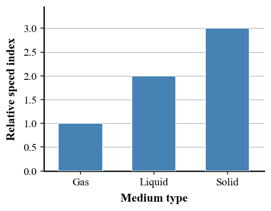

1. Identify the vibrating source in this situation: a loudspeaker cone moves back and forth and a tone is heard.
2. What is a compression in a longitudinal sound wave?
3. What does the term medium mean for a sound wave?
4. Which state of matter—solid, liquid, or gas—can transmit mechanical sound waves?
5. Which wave property primarily determines perceived loudness?
6. The chart is a relative-speed model based on the section reading. Describe the ordering of sound propagation through gases, liquids, and solids, and explain what the model says about sound speed depending on the medium.

7. A sound pulse travels 1020 m in 3.0 s through room-temperature air. Determine its speed and compare it with the class approximation of 340 m/s.
8. A listener is 850 m from a sound source. Estimate the travel time through air using 340 m/s.
9. A person places an ear on a long solid beam while another person taps the far end. Explain why the beam can transmit sound even though it does not flow like air.
10. Two sounds have equal amplitude but frequencies 250 Hz and 500 Hz. Compare their loudness (from the given amplitude information) and pitch.
11. A student draws air particles traveling from the speaker all the way to the listener. Explain how the particle model should be revised to show local vibration and energy transfer.
12. A claim says sound can cross interplanetary space because radio signals can. Explain why this comparison confuses mechanical sound waves with a different kind of wave.
13. A loudspeaker produces sound because its cone
14. A compression is a region where medium particles are
15. Which statement about sound in matter is correct?
16. A perfect vacuum cannot carry ordinary sound because sound is
17. If two tones have the same frequency but different amplitudes, they can differ mainly in
18. A 680 m sound path through air takes about
19. Which observation supports the idea that solids transmit sound?
20. Increasing frequency while keeping amplitude unchanged most directly raises